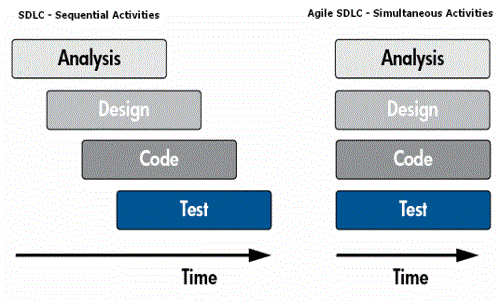

Shift left
process overview
What we have talked about last time:
Testing begins, NOT when something becomes testable, but instead at the moment there exists something that needs testing!
Manual testing is NOT ad-hoc activity!
Automation testing is integrated development effort!
Test reports should NOT look like this:
Activities
- What to expect from now on:
- Plan and create test cases in advance
- Support a periodic cycle of integration testing for the components/applications under change
- Prioritize, process, and resolve feedback by development teams within the feedback loop
- Whatever testing you can perform shifts left
- What to expect from now on:
- Gather details about testing priorities and focus
- Identify types of tests to be performed
- Prepare Requirement Traceability Matrix (RTM)
- Identify test environment details where testing is supposed to be carried out
- Automation feasibility analysis (if required)
Simple SDLC phases
Requirements
Meetings with managers, stake holders and users are held in order to determine the requirements like:
Who is going to use the system? How will they use the system?
What data should be input into the system?
What data should be output by the system?
Assure their testability
Design
- In this phase the testers comes up with the Test strategy, where they mention what to test, how to test
- Define Exit Criteria
Code
- Test environment Setup
- Low level Test case development
- Unit and Integration tests
Test
- Test execution
- Test reporting
- UAT
Align with QA

- Main goals of testing during the initial phases are to
- Determine that the requirements fairly represent what the user needs
- Determine that the needs have been defined and documented
- Verify that a cost/benefit study has been performed and that it is reasonable
- Determine that the business problem has been solved
- Verify that the control requirements have been specified
- Verify that a reasonable process was followed in developing the business solution
- Verify that a reasonable alternative was selected among the most probable alternative solutions
QA flow
QAs meets with Business/Design/Whoever in order to understand what to test against
QA will carefully review any Business Requirement Documents (SoW)
Based on the details from the above, QA will start writing high test cases, usually starting with UI test cases and then going into integration test cases afterwards
All through the steps above, QA needs to check with Business to get a stamp of approval on the test cases being written!
Considerations
Overall
- Identify feedback velocity and means to measure it
- Scope of automation pipeline (build, deploy, test)
- Decide which changes will improve team’s success (versus introduce functionality)
- Continuously improve and plan for next steps (they will be needed)
“The older model will, over time, make way for the newer model. This will be a case Darwinian natural selection played out in the matter of only a few short years. The fittest will survive with the timeframe determined by economics and quality of execution.”~ J.A. Whittaker - Exlporatory software testing, 2009